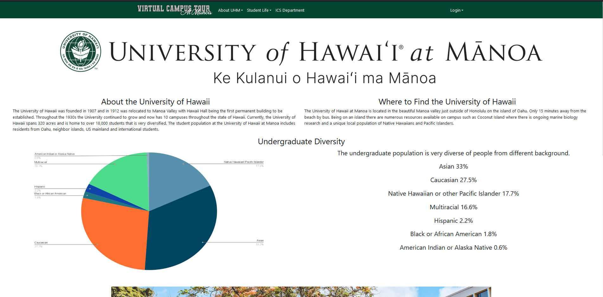

Virtual Campus Tour

Why Virtual Campus Tours
The creation of a virtual campus tour came from a single problem. The ease of information access on the Manoa website. While a lot of information can be found on the University of Hawaii website, the main problem comes when trying to find specific information. Our website exists to compile all important information for an incoming student while giving them the freedom to explore what opportunities are available at the UH Manoa campus.
In this project, we start by focusing on the ICS department at UH Manoa, trying to highlight the aspects that most incoming freshmen would be hard pressed to find on the Manoa website. Due to the existence of the Manoa website, our site provides links back to the main site when more information can be provided. While this project only provides information on the ICS department at the moment, in the future it is our plan to incorporate more departments into the tour to allow more prospective students to explore what makes UH Manoa an amazing campus

My Contribution to the Project
My contribution to the project focuses solely on the front end development of most of our pages. This includes the formatting, refactoring, and design of many of our front end pages. I specifically worked on the homepage, general, classrooms, department, admission, and scholarship pages while also doing re-formatting on many of the other pages. During this project, I also got familiar with assigning issues and working in branches with other team members.
# Lessons Learned During Development
I think one of the most important lessons learned during the project was the idea of planning ahead and understanding how code will work in execution. One of the problems that took the longest to resolve was having to refactor all of our pages to work with components. This is a problem that could have easily been avoided had more thought been put into how our project would function in terms of code as opposed to just ideas. This problem added hours to the development process and could have been avoided with just a little planning ahead.
Another lesson learned during this project is how important good communication is during a project with a larger scale. Many school assignments are done individually so it is a rare opportunity for an assignment to be worked on collaboratively. Keeping up with deadlines, notifying others when changes are made, and helping with others’ work is important when coming together to complete a project. This project allowed me to see first hand how these aspects might be implemented in a coding project and why they are so important for an effective team.